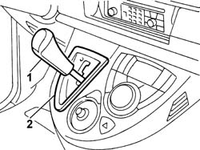
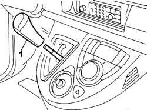

2135A16 AUTOMATIC TRANSMISSION LEVER HANDLE - R R
- Path
- Procedures > 21 GEARBOX UNIT > 2135 AUTOMATIC TRANSMISSION EXTERNAL CONTROLS > 2135A AUTOMATIC TRANSMISSION MANUAL CONTROLS > 2135A16 AUTOMATIC TRANSMISSION LEVER HANDLE - R R
- Kind
- repair procedure (removal / refitting; the operation number is the code)
- Applies to
- engines: 3.0 24V V6; all production periods
- Interactive page
- https://sloeber94.github.io/elrnDB-fUlss/en/#/179007258
Applies to: engines: 3.0 24V V6; all production periods
 Removing
Removing
 Refitting
Refitting1. Place the gear lever in position (N).
2. Release the securing clips, starting from the bottom, and remove the automatic transmission control lever assembly surround.

Applies to: engines: 3.0 24V V6; all production periods
1. Release the grip from the automatic transmission control lever exering moderate force.

Applies to: engines: 3.0 24V V6; all production periods
Refitting
Removing- Position the grip on the automatic transmission control lever and press to lock it onto the actual lever exerting moderate force.
- Position the automatic transmission control lever assembly surround and secure it using the clips.